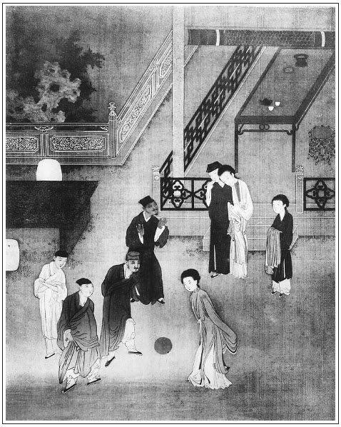

張回此回與下十六回，皆瓶兒傳中過文也。然此回純是順筆描寫，頓挫中花樣。故全是春雲初上，層層次次生法出來的文字也。
《燈賦》中以玉樓金蓮起，瓶兒在中，月娘、西門結尾。隱伏一會中人已將寫全矣。故妙。
桂姐文字，本為瓶兒文字作生活。故不惜寫架兒，寫圓社等也。然卻又遙照後王三官文內。
處處以娼妓暗描瓶兒，作者之意可想。
於瓶兒過節文字中，乃將金蓮出身一繳，絕妙照應之手筆章法也。
寫月娘聽樓下人言金蓮舊事，乃不先打發金貴等回，乃自己即刻起身。寫月娘之與西門痛癢不相關，惟知邀夫之幸，安享富貴，毫不肯擔一些利害，受一點禍患，若惟恐禍及於己也。月娘之可恨如此！繼室之可恨如此！
桂姐家去，卻以吳銀兒結。絕妙，生色掩映。
詩曰：
樓上多嬌艷，當窗並三五。
爭弄游春陌，相邀開繡戶。
轉態結紅裾，含嬌入翠羽。
留賓乍拂弦，托意時移住。

話說光陰迅速，又早到正月十五日。西門慶先一日差玳安送了四盤羹菜、一罈酒、一盤壽桃、一盤壽麵、一套織金重絹衣服，寫吳月娘名字，送與李瓶兒做生日。李瓶兒才起來梳妝，叫了玳安兒到臥房裡，說道：「前日打攪你大娘，今日又教你大娘費心送禮來。」玳安道：「娘多上覆，爹也上覆二娘，繡眉下語絕有弄頭，若只曰「爹娘上覆」，便文心死矣。不多些微禮，送二娘賞人。」李瓶兒一面吩咐迎春罷四盤茶食管待玳安。臨出門與二錢銀子、一方閃色手帕：「到家多上覆你家列位娘，我這裡就使老馮拿帖兒來請。好歹明日都要光降走走。」玳安磕頭出門，兩個抬盒子的與一百文錢。張夾細。李瓶兒隨即使老馮拿著五個柬帖兒，十五日請月娘和李嬌兒、孟玉樓、孫雪娥、潘金蓮，又捎了一個帖兒，暗暗請西門慶那日晚夕赴席。
月娘到次日，留下孫雪娥看家，同李嬌兒、孟玉樓、潘金蓮四頂轎子出門，都穿著妝花錦繡衣服，來興、來安、玳安、畫童四個小廝跟隨著，竟到獅子街燈市李瓶兒新買的房子裡來。這房子門面四間，到底三層：臨街是樓；儀門內兩邊廂房，三間客坐，一間梢間；過道穿進去，第三層三間臥房，一間廚房。後邊落地緊靠著喬皇親花園。繡旁伏。李瓶兒知月娘眾人來看燈，臨街樓上設放圍屏桌席，懸掛許多花燈。
先迎接到客位內，見畢禮數，次讓入後邊明間內待茶，不必細說。到午間，客位內設四張桌席，叫了兩個唱的──董嬌兒、韓金釧兒，彈唱飲酒。前邊樓上設著細巧添換酒席，又請月娘眾人登樓看燈玩耍。樓簷前掛著湘簾，懸著燈綵。吳月娘穿著大紅妝花通袖襖兒，嬌綠段裙，貂鼠皮襖。李嬌兒、孟玉樓、潘金蓮都是白綾襖兒，藍段裙。李嬌兒是沉香色遍地金比甲，孟玉樓是綠遍地金比甲，潘金蓮是大紅遍地金比甲，頭上珠翠堆盈，鳳釵半卸。俱搭伏定樓窗觀看。那燈市中人煙湊集，十分熱鬧。當街搭數十座燈架，四下圍列諸般買賣，玩燈男女，花紅柳綠，車馬轟雷。但見：
山石穿雙龍戲水，雲霞映獨鶴朝天。金屏燈、玉樓燈張旁金蓮、玉樓合寫。見一片珠璣；張夾金蓮、玉樓作起。荷花燈、芙蓉燈張旁金蓮、瓶兒全寫。散千圍錦繡。繡球燈皎皎潔潔，雪花燈拂拂紛紛。秀才燈張旁溫秀才等。揖讓進止，存孔孟之遺風；繡旁以下俱俚得妙！媳婦燈容德溫柔，效孟姜之節操。張夾四句內，一刺西門，一刺月娘也。和尚燈月明與柳翠相連，判官燈鍾馗共小妹並坐。師婆燈揮羽扇假降邪神，劉海燈背金蟾戲吞至寶。駱駝燈、青獅燈馱無價之奇珍；猿猴燈、白象燈進連城之秘寶。七手八腳螃蟹燈倒戲清波，巨大口髯鲇魚燈平吞綠藻。銀蛾斗彩，雪柳爭輝。魚龍沙戲，七真五老獻丹書；吊掛流蘇，九夷八蠻來進寶。村裡社鼓，隊隊喧闐；百戲貨郎，樁樁斗巧。轉燈兒一來一往，吊燈兒或仰或垂。琉璃瓶，映美女奇花，張夾瓶兒。雲母障並瀛州閬苑。王孫爭看小欄下，蹴鞠齊雲；仕女相攜高樓上，嬌嬈炫色。張夾四句正寫本題。卦肆雲集，相幙星羅：講新春造化如何，定一世榮枯有准。張夾伏「冰鑒」一回。又有那站高坡打談的，詞曲楊恭；到看這扇響鈸游腳僧，演說三藏。賣元宵的高堆果餡，粘梅花的齊插枯枝。剪春娥，鬢邊斜插鬧東風；禱涼釵，頭上飛金光耀日。圍屏畫石崇之錦帳，張夾西門慶。珠簾繪梅月之雙清。張夾月娘春梅作結。雖然覽不盡鰲山景，也應豐登快活年。張夾妙在將有名人物俱賦人，見得一時幻景不多時，而此一回，又「冰鑒」中一影也。
月娘看了一回，見樓下人亂，就和李嬌兒各歸席上吃酒去了。惟有潘金蓮、孟玉樓同兩個唱的，只顧搭伏著樓窗子望下觀看。那潘金蓮一徑把白綾襖袖子兒摟著，顯他那遍地金掏袖兒，露出那十指春蔥來，帶著六個金馬鐙戒指兒，探著半截身子，口中嗑瓜子兒，把嗑的瓜子皮兒都吐落在人身上，繡旁奇想。和玉樓兩個嘻笑不止。繡眉金蓮輕佻處，曲曲摹盡。一回指道：「大姐姐，你來看，那家房簷下掛的兩盞繡球燈，一來一往，滾上滾下，倒好看。」一回又道：「二姐姐，你來看，這對門架子上，挑著一盞大魚燈，下面還有許多小魚鱉蟹兒，跟著他倒好耍子。」一回又叫：「三姐姐，張夾排定三位姐姐，卻只見得生動而不板，故妙，妙。你看，這首裡這個婆兒燈，那個老兒燈。」正看著，忽然一陣風來，把個婆兒燈下半截割了一個大窟窿。繡旁趣甚。婦人看見，笑個不了，引惹的那樓下看燈的人，挨肩擦背，仰望上瞧，通擠匝不開，都壓裸裸兒。內中有幾個浮浪子弟，直指著談論。一個說道：「一定是那公侯府裡出來的宅眷。」一個又猜：「是貴戚王孫家艷妾，來此看燈。不然如何內家妝束？」張夾寫西門奢侈僭處。又一個說道：「莫不是院中小娘兒？是那大人家叫來這裡看燈彈唱。」又一個走過來說道：「只我認的，你們都猜不著。這兩個婦人，也不是小可人家的，他是閻羅大王的妻，五道將軍的妾，是咱縣門前開生藥鋪、放官吏債西門大官人的婦女。你惹他怎的？想必跟他大娘來這裡看燈。這個穿綠遍地金比甲的，我不認的。繡旁補得妙。那穿大紅遍地金比甲兒，上戴著個翠面花兒的，倒好似賣炊餅武大郎的娘子。大郎因為在王婆茶坊內捉姦，被大官人踢死了。把他娶在家裡做妾。後次他小叔武松告狀，誤打死了皂隸李外傳，被大官人墊發充軍去了。繡眉金蓮往事，無意中又閒提一過，前後之脈落俱靈。如今一二年不見出來，落的這等標緻了。」張夾瓶兒傳中，又為金蓮一襯。正說著，吳月娘見樓下圍的人多了，叫了金蓮、玉樓席坐下，聽著兩個粉頭彈唱燈詞，飲酒。
坐了一回，月娘要起身，說道：張夾明聽見人言嘈雜，乃反先行，何故。「酒夠了，我和二娘先行一步，留下他姊妹兩個再坐一回兒，以盡二娘之情。今日他爹不在家，家裡無人，光丟著些丫頭們，繡旁「光」字連雪娥在內。我不放心。」這李瓶兒那裡肯放，說道：「好大娘，奴沒盡心也是的。今日大節間，燈兒也沒點，飯兒也沒上，就要家去，就是西門爹不在家中，還有他姑娘們哩，怕怎的？待月色上來，奴送四位娘去。」月娘道：「二娘，不是這等說。我又不大十分用酒，留下他姊妹兩個，就同我一般。」李瓶兒道：「大娘不用，二娘也不吃一鐘，也沒這個道理。想奴前日在大娘府上，那等鍾鍾不辭，眾位娘竟不肯饒我。今日來到奴這湫窄之處，雖無甚物供獻，也盡奴一點勞心。」於是拿大銀鍾遞與李嬌兒，說道：「二娘好歹吃一杯兒。大娘，奴不敢奉大杯，只奉小杯兒罷。」於是滿斟遞與月娘。兩個唱的，月娘每人與他二錢銀子。待的李嬌兒吃過酒，月娘就起身，又囑咐玉樓、金蓮道：「我兩個先去，就使小廝拿燈籠來接你們，也就來罷。家裡沒人。」玉樓應諾。李瓶兒送月娘、李嬌兒到門首，上轎去了。歸到樓上，陪玉樓、金蓮飲酒，看看天晚，樓上點起燈來，兩個唱的彈唱飲酒，不在話下。
卻說西門慶那日同應伯爵、謝希大兩個，繡眉不說到金蓮席散，便敘西門慶，此文家勾搭之妙。家中吃了飯，同往燈市裡遊玩。到了獅子街東口，西門慶因為月娘眾人都在李瓶兒家吃酒，恐怕他兩個看見，就不往西街去看大燈，只到賣紗燈的跟前就回了。不想轉過灣來，撞遇孫寡嘴、祝實念，唱喏說道：「連日不會哥，心中渴想。」見了應伯爵、謝希大罵道：「你兩個天殺的好人兒，你來和哥遊玩，就不說叫俺一聲兒！」張夾如畫。西門慶道：「祝兄弟，你錯怪了他兩個，剛才也是路上相遇。」張夾十兄弟只如此。祝實念道：「如今看了燈往那裡去？」西門慶道：「同眾位兄弟到大酒樓上吃三杯兒，不是也請眾兄弟家去，今日房下們都往人家吃酒去了。」祝實念道：「比是哥請俺每到酒樓上，何不往裡邊望望李桂姐去？只當大節間拜拜年，去混他混。前日俺兩個在他家，他望著俺們好不哭哩！說他從臘裡不好到如今，大官人通影邊兒不進去看他看。哥今日倒閒，俺們情願相伴哥進去走走。」西門慶因記掛晚夕李瓶兒有約，故推辭道：「今日我還有小事，明日去罷。」怎禁這夥人死拖活拽，於是同進院中去。正是：
柳底花陰壓路塵，一回游賞一回新。
不知買盡長安笑，活得蒼生幾戶貧？張旁字字淚血。
西門慶同眾人到了李家，桂卿正打扮著張旁是燈節。在門首站立，一面迎接入中堂相見了。祝實念就高叫道：繡旁酷肖。「快請三媽出來！還虧俺眾人，今日請的大官人來了。」少頃，老虔婆扶拐而出，與西門慶見禮畢，說道：「老身又不曾怠慢了姐夫，如何一向不進來看看姐兒？想必別處另敘了新表子來。」祝實念插口道：「你老人家會猜算，俺大官人近日相了個絕色的表子，每日只在那裡走，不想你家桂姐兒。剛才不是俺二人在燈市裡撞見，拉他來，他還不來哩！媽不信，問孫伯修就是了。」因指著應伯爵、謝希大說道：「這兩個天殺的，和他都是一路神祇。」張夾映出心事。小人態度如畫。老虔婆聽了，哈哈笑道：「好應二哥，俺家沒惱著你，如何不在姐夫面前美言一句兒？雖故姐夫裡邊頭絮兒多，張夾又引月兒。常言道：『好子弟不嫖一個粉頭』，『天下錢眼兒都一樣』。繡旁忽說出心事，妙。張夾又一轉。不是老身誇口說，我家桂姐也不醜，姐夫自有眼，張夾又一轉。今也不消人說。」張夾又一轉。孫寡嘴道：「我是老實說，哥如今新敘的這個表子，不是裡面的，是外面的表子。」繡旁微詞，妙。張夾此作者待金、瓶二人之本意也。西門慶聽了，趕著孫寡嘴只顧打，說道：「老媽，你休聽這天災人禍的老油嘴，老殺才！」孫寡嘴和眾人笑成一塊。西門慶向袖中掏出三兩銀子來，遞與桂卿：「大節間，我請眾朋友。」張夾眾朋友之意也。桂卿不肯接，遞與老媽。老媽說道：「怎麼的？姐夫就笑話我家，大節下拿不出酒菜兒管待列位老爹？又教姐夫壞鈔，拿出銀子。顯的俺們院裡人家只是愛錢了。」應伯爵走過來說道：「老媽，你依我收了，快安排酒來俺們吃。」那虔婆說道：「這個理上卻使不得。」一壁推辭，一壁把銀子接來袖了，深深道了個萬福，說道：「謝姐夫的佈施。」繡旁好名色。應伯爵道：「媽，你且住。我說個笑話兒你聽：繡旁又頓一頓，妙甚。一個子弟在院中嫖小娘兒。那一日做耍，裝做貧子進去。老媽見他衣服襤褸，不理他。坐了半日，茶也不拿出來。子弟說：『媽，我肚饑，有飯尋些來吃。』老媽道：『米囤也曬，那討飯來？』子弟又道：『既沒飯，有水拿些來，我洗臉。』老媽道：『少挑水錢，連日沒送水來。』這子弟向袖中取出十兩一錠銀子，放在桌上，教買米雇水去。慌的老媽沒口子道：『姐夫吃了臉洗飯，洗了飯吃臉！』」張夾此笑話特與上十二回內笑話，有先後之分。故妙。把眾人都笑了。虔婆道：「你還是這等快取笑，張夾映上十二回。可可兒的來，自古有恁說沒這事。」繡旁只不認泛，妙。張夾千古癡人俱被此言愚盡。應伯爵道：「你拿耳朵來，我對你說：大官人新近請了花二哥表子──繡旁雙關語，驚人，妙。張夾步步相形，故知作者特特置金、瓶二人於娟妓不如之地也。後巷的吳銀兒了，張眉以銀兒影瓶兒，是作者寫銀兒本意，故後文銀、瓶終始相全也。不要你家桂姐哩！」虔婆笑道：「我不信，俺桂姐今日不是強口，比吳銀兒還比得過。我家與姐夫是快刀兒割不斷的親戚。繡眉又映李嬌兒，文情深冷之至。張夾妙絕，是西門慶家之親戚也。姐夫是何等人兒？他眼裡見得多，著緊處，金子也估出個成色來！」張夾一語西門已不堪矣。說畢，入去收拾酒菜去了。
少頃，李桂姐出來，家常挽著一窩絲杭州攢，金縷絲釵，翠梅花鈿兒，珠子箍兒，金籠墜子，上穿白綾對襟襖兒，下著紅羅裙子，打扮的粉妝玉琢，望下道了萬福，與桂卿一邊一個打橫坐下。須臾，泡出茶來，桂卿、桂姐每人遞了一盞，陪著吃畢。保兒就來打抹春台，才待收拾擺放案酒，張夾一個花樣。忽見簾子外探頭舒腦，有幾個穿襤褸衣者──謂之架兒，繡旁絕，有生發。進來跪下，手裡拿著三四升瓜子兒：「大節間，孝順大老爹。」西門慶只認頭一個叫於春兒，問：「你們那幾個在這裡？」於春道：「還有段綿紗、青聶鉞，在外邊伺候。」段綿紗進來，看見應伯爵在裡，說道：「應爹也在這裡。」連忙磕了頭。西門慶吩咐收了他瓜子兒，打開銀包兒，捏一兩一塊銀子掠在地下。於春兒接了，和眾人扒在地下磕了個頭，說道：「謝爹賞賜。」往外飛跑。有《朝天子》單道架兒行藏：
這家子打和，那家子撮合。他的本分少，虛頭大，一些兒不巧又騰挪，繞院裡都踅過。席面上幫閒，把牙兒閒嗑。攘一回才散伙，繡旁妙。賺錢又不多。歪廝纏怎麼？他在虎口裡求津唾。張夾財之可畏，可憐。
西門慶打發架兒出門，安排酒上來吃。桂姐滿泛金盃，雙垂紅袖，餚烹異品，果獻時新，倚翠偎紅，花濃酒艷。酒過兩巡，桂卿、桂姐一個彈箏，一個琵琶，兩個彈著唱了一套《霽景融和》。正唱在熱鬧處，張夾又一花樣。見三個穿青衣黃板鞭者──謂之圓社，手裡捧著一隻燒鵝，提著兩瓶老酒，大節間來孝順大官人，向前打了半跪。西門慶平昔認的，一個喚白禿子，一個喚小張閒，一個是羅回子，繡眉命名妙甚，宛然二人在目。因說道：「你們且外邊候候，待俺們吃過酒，踢三跑。」於是向桌子上拾了四盤嗄飯、一大壺酒、一碟點心，打發眾圓社吃了，整理氣毬伺候。西門慶吃了一回酒，出來外面院子裡，先踢了一跑。張夾又一段。次教桂姐上來，與兩個圓社踢。一個楂頭，一個對障，勾踢拐打之間，無不假喝彩奉承。就有些不到處，都快取過去了。反來向西門慶面前討賞錢，說：「桂姐的行頭，就數一數二的，強如二條巷董官女兒數十倍。」當下桂姐踢了兩跑下來，使的塵生眉畔，汗濕腮邊，氣喘吁吁，腰肢困乏。袖中取出春扇兒搖涼，張夾又一段。與西門慶攜手，看桂卿與謝希大、張小閒踢行頭。白禿子、羅回子在旁虛撮腳兒等漏，往來拾毛。張夾又一段。亦有《朝天子》一詞，單表這踢圓的始末：
在家中也閒，到處刮涎，生理全不幹，繡眉只此便是生理。氣毬兒不離在身邊，每日街頭站。窮的又不趨，富貴他偏羨。從早晨只到晚，不得甚飽餐。轉不得大錢，他老婆常被人包占。
西門慶正看著眾人在院內打雙陸、踢氣毬，飲酒，張夾緊緊一脈按入，此正文也。只見玳安騎馬來接，悄悄附耳低言道：「大娘、二娘家去了。張夾是家裡的話。花二娘叫小的請爹早些過去哩！」張夾是瓶兒處話也。這西門慶聽了，暗暗叫玳安：「把馬吊在後門邊，等著我。」於是酒也不吃，拉桂姐到房中，只坐了一回兒，就出來推淨手，於後門上馬，一溜煙走了。應伯爵使保兒去拉扯，西門慶只說：「我家裡有事。」那裡肯轉來！教玳安兒拿了一兩五錢銀子打發三個圓社。李家恐怕他又往後巷吳銀兒家去，使丫鬟直跟至院門首方回。張旁找足以銀兒影寫處。應伯爵等眾人，還吃到二更才散。正是：
笑罵由他笑罵，歡娛我且歡娛。
本章完!